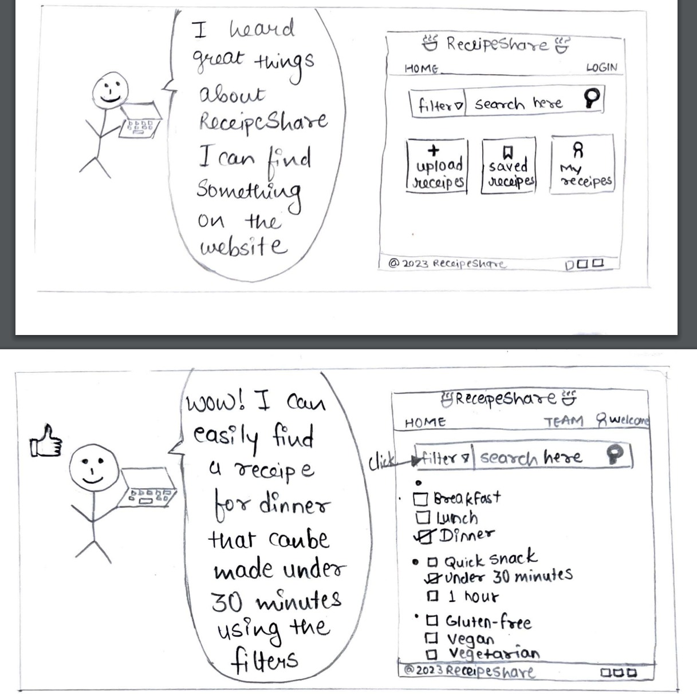
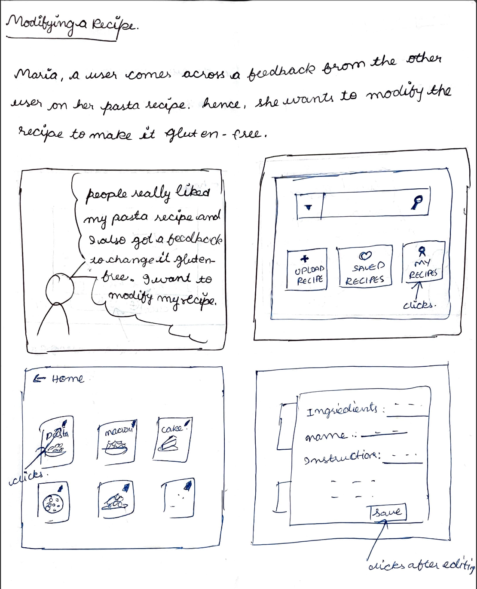
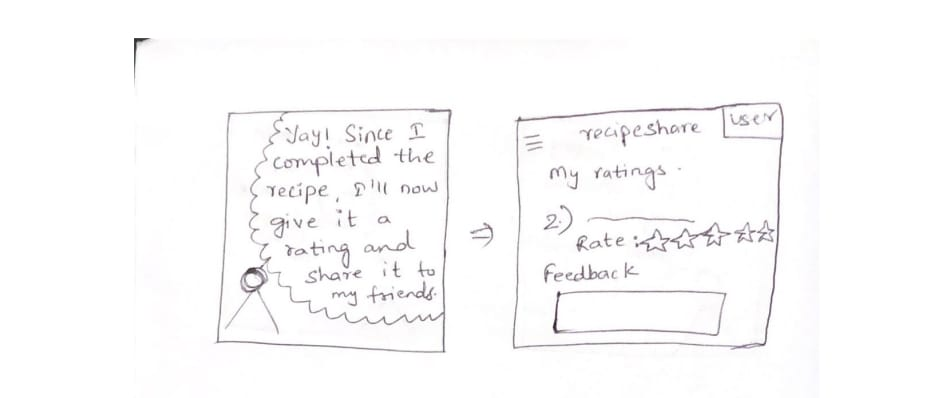

Task-1 : Register or Login to the website
We chose this because, in the user authentication page, it provides two options for signing up. Users can either log in using their social media profiles or use the normal signup page, which requires a username and password. Finally, there is a login button for existing users.
Task 2: Search for a Recipe

We chose this storyboard for task 2 as it depicts the user’s emotional state and device in the diagram. It also shows detail overview of the website showing different filter availble for the users to choose from.
Task 3: Upload a Recipe
We chose this design as it shows clear picture of the website and also the emotional state of the user who is happy to upload the recipe.
Task 4: Modify a Recipe

The design effectively outlines the scenario, goal, and user persona. It showcases the main options on the home page, including "Upload Recipe," "Saved Recipes," and "My Recipes." It provides clear guidance on where the user should navigate to make modifications to their designs. Given the clarity in the user's task flow within this design, it was our preferred choice among all the options.
Task 5: Sharing a Recipe
The design provides a comprehensive portrayal of the scenario, outlining the goal and introducing the user persona. It illustrates the options available for a specific recipe, offering users many choices. Additionally, there is a prominently featured share button that, upon clicking, offers a selection of platforms. This intuitive feature ensures that users can effortlessly share the content across various social media platforms. Given the clarity with which this design explains the user's task process, it stood out as the preferred choice among all the options presented.
Task 6: Providing rating and feedback to recipes

We choose this because it allows 2 types of rating which is rating by stars and a comment box where user can express his review there